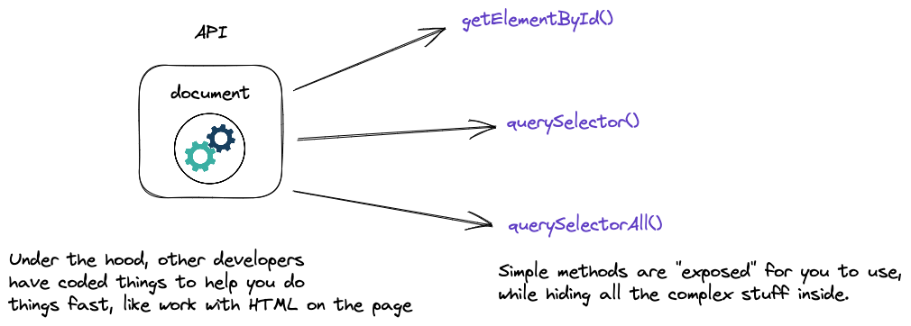
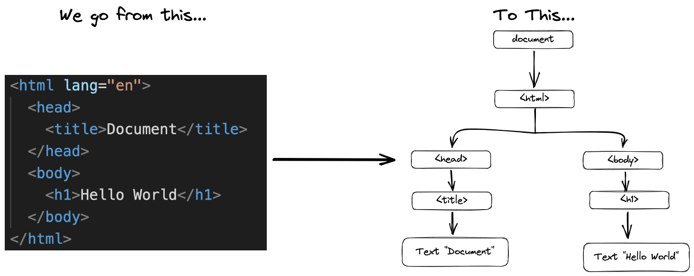
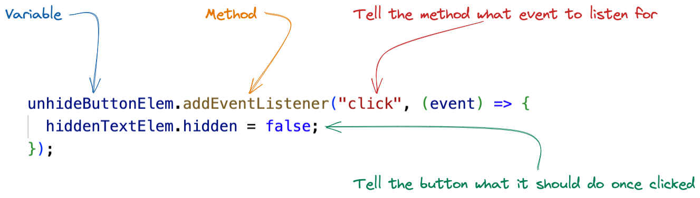

DOM & API
Your JavaScript code interacts with the HTML written on the page, using something called a DOM API. Lets break those concepts down.
API
An API is a bit of a squishy term, but at its core -- it is just code that has already been written by other developers, designed to be easy to use to make your job easier.
DOM
The DOM takes the HTML written on the page, and turns it into a "tree".
Why is this called a tree, when the root is at the top? Because programmers never go outside.
All you really need to know, is that the browser turns your HTML into a model, which you can then interact with via APIs.
Events
Everything you do on the browser, is firing a constant stream of events. If we don't have any code written to detect them, we don't know they are happening. Let's change that. With your dev console open, click anywhere on the page.
Adding an event listener to the entire document is a bit overkill, usually we want to listen for specific elements, like clicking on a button for example.
Creating an event listener
For this example, lets create a segment of text that is hidden, and a button which will unhide it once clicked.
Let's break down this syntax.

The (event) => {hiddenTextElem.hidden = false;} part is
known as a "callback function". We will go into more detail on functions
next class. For now, think of a function as a reusable chunk of code.